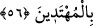
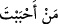
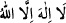

56. (Rasûlüm!) Sen sevdiğini hidâyete erdiremezsin; bilakis, Allah dilediğine
hidâyet verir ve hidâyete girecek olanları en iyi O bilir.
“(Rasûlüm!)” Ey Muhammed, “Şüphesiz Sen” bütün güç ve gayretini sarfetsen de
insanlardan “sevdiğini” maksada ulaştıracak bir “hidâyete erdiremezsin;” onların
İslâm’a girmelerine güç yetiremezsin. “Bilakis, Allah dilediğine hidâyet verir,” onları
İslâm’a sokar “ve hidâyete girecek” ehliyet ve kabiliyette “olanları en iyi O bilir” ve
ancak böyle kimselere hidâyet nasib eder.
Kime hidâyet verdi ise, ezelde vermiştir
O hidâyet nihâyete kadar o adama yoldaş olur
Cumhur, bu âyetin Rasûlullah (s.a.)’ın amcası Ebû Tâlib b. Abdulmuttalib hakkında
nâzil olduğu görüşündedir. Buna göre âyetteki “
(sevdiğin kimse)” ifâdesi ile
kasdedilen Ebû Tâlib’tir.
Ebu Tâlib’in vefatı yaklaşınca, Peygamber (s.a.) onun yanına geldi. Amcasının îmân
etmesini çok istiyordu. Dedi ki: “Ey amca, “
(Allah’tan başka ilah yoktur)”
de de ben de Allah katında seni bununla savunayım.”[120]
Ebû Tâlib dedi ki: “Ey kardeşimin oğlu, ben biliyorum ki, sen doğrusun ve sâdıksın.
Fakat arkamdan, ölüm anında “korktu (da îman etti)”, denmesinden hoşlanmıyorum.
Sana ve babanın oğullarına benden sonra bir zillet ve perişanlık isâbet etmesinden
korkmasaydım; senin bu şiddetli nasihat ve içten gelen arzunu yerine getirmek ve gözünü
aydın etmek için o kelimeyi söyler ve ikrar ederdim. Fakat ben dedelerim
Abdulmuttalib, Hâşim ve Abdimenaf’ın dini üzre ölüyorum.”
Rivâyete göre Ebû Tâlib, kelîme-i tevhîdi reddedince Rasûlullah (s.a.);
“Nehyolunmadığım sürece senin için istiğfâr edeceğim”[121] dedi. Bunun üzerine Allah
Teâlâ şu âyeti inzâl buyurdu:
“Akraba bile olsalar; cehennem halkı oldukları belli olduktan sonra Allah’a
ortak koşanlar için mağfiret dilemek; ne peygamberin, ne de inananların yapacağı
bir iş değildir.” (et-Tevbe, 9/113)
Bazı rivâyetlerde şöyle vârid olmuştur: Peygamber (s.a.) Vedâ Haccı’ndan dönünce,
Allah Teâlâ onun için ana-babasını ve amcasını diriltmiş, onlar da ona îman etmişlerdi.
Nitekim bu konu Tevbe suresinde geçmişti.
et-Te’vîlâtü’n-Necmiyye’de der ki: Hakîkatta “hidâyet”; rubûbiyyet âlemine götüren
ubûdiyyet kapısının açılmasıdır. Bu, Hak Sübhânehû ve Teâlâ’nın kudretinin